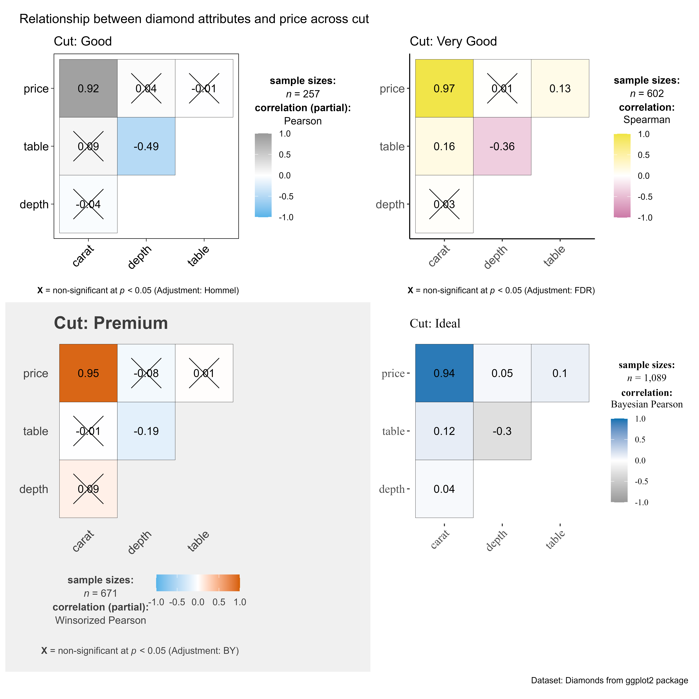
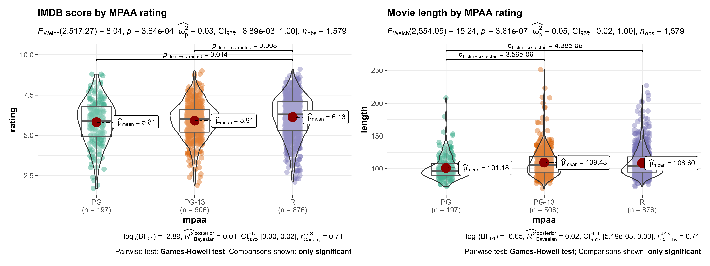

using ggstatsplot with the purrr package
Indrajeet Patil
2020-09-08
Source:vignettes/web_only/purrr_examples.Rmd
purrr_examples.Rmd
Why use purrr?
Most of the ggstatsplot functions have grouped_ variants, which are designed to quickly run the same ggstatsplot function across multiple levels of a single grouping variable. Although this function is useful for data exploration, it has two strong weaknesses-
The arguments applied to
grouped_function call are applied uniformly to all levels of the grouping variable when we might want to customize them for different levels of the grouping variable.Only one grouping variable can be used to repeat the analysis when in reality there can be a combination of grouping variables and the operation needs to be repeated for all resulting combinations.
We will see how to overcome this limitation by combining ggstatsplot with the purrr package.
Note:
Unlike the typical function call for
ggstatsplotfunctions where arguments can be a string ("x") or a symbol (x), while usingpurrr::pmap, we must input the arguments as strings.You can use
ggplot2themes from extension packages (likeggthemes).If you’d like some more background or an introduction to the purrr package, please see this tutorial.
Introduction and methodology
For all the examples in this vignette we are going to build lists of things that we will pass along to purrr which will in turn return a list of plots that will be passed to combine_plots. As the name implies combine_plots merges the individual plots into one bigger plot with common labeling and aesthetics.
What are these lists that we are building? The lists correspond to the parameters in our ggstatsplot function like ggbetweenstats. If you look at the help file for ?ggbetweenstats for example the very first parameter it wants is the data file we’ll be using. We can also pass it different titles of even ggthemes.
You can pass:
A single character string such as
xlab = "Continent"or numeric such asnboot = 25in which case it will be reused/recycled as many times as needed.A vector of values such as
notch = c(TRUE, FALSE, TRUE)in which case it will be coerced to a list and checked for the right class (in this case integer) and the right quantity of entries in the vector i.e.,notch = c(TRUE, FALSE)will fail if we’re trying to make three plots.A list; either named
data = year_listor created as you gopalette = list("Dark2", "Set1"). Any list will be checked for the right class (in this case character) and the right quantity of entries in the list.
ggbetweenstats
Following our methodology above let’s start with ggebtweenstats. We’ll use the gapminder dataset. We’ll make a 3 item named list called data_list using dplyr::filter and split.
library(ggstatsplot) # for reproducibility set.seed(123) # let's split the dataframe and create a list by years of interest year_list % dplyr::filter(.data = ., year %in% c(1967, 1987, 2007), continent != "Oceania") %>% split(x = ., f = .$year, drop = TRUE) # checking the length of the list and the names of each element length(year_list) #> [1] 3 names(year_list) #> [1] "1967" "1987" "2007"
Now that we have the data divided into the three relevant years in a list we’ll turn to purrr::pmap to create a list of ggplot objects that we’ll make use of stored in plot_list. When you look at the documentation for ?pmap it will accept .l which is a list of lists. The length of .l determines the number of arguments that .f will be called with. List names will be used if present. .f is the function we want to apply (here, .f = ggstatsplot::ggbetweenstats).
So let’s keep building .l. First is data = year_list, the x & y axes are constant in all three plots so we pass the variable name as a string x = "continent". Same with the label we’ll use for outliers where needed. For demonstration purposes let’s assume we want the outliers on each plot to be a different color. Not actually recommending it just demonstrating what’s possible. The rest of the code shows you a wide variety of possibilities and we won’t catalog them here.
# for reproducibility set.seed(123) # creating a list of plots plot_list
The final step is to pass the plot_list object we just created to the combine_plots function. While each of the 3 plots already has labeling information combine_plots gives us an opportunity to add additional details to the merged plots and specify the layout in rows and columns.
# combining all individual plots from the list into a single plot using combine_plots function ggstatsplot::combine_plots( plotlist = plot_list, title.text = "Changes in life expectancy across continents (1967-2007)", title.color = "red", ncol = 1 )

ggwithinstats
We will be using simulated data from then Attention Network Test provided in ANT dataset in ez package.
library(ggstatsplot)
library(ez)
data("ANT") # loading data from `ez` package
# for reproducibility
set.seed(123)
# let's split the dataframe and create a list by years of interest
cue_list %
split(x = ., f = .$cue, drop = TRUE)
# checking the length of the list and the names of each element
length(cue_list)
#> [1] 4
# creating a list of plots by applying the same function for elements of the list
plot_list 
ggscatterstats
For the next example lets use the same methodology on different data and using ggscatterstats to produce scatterplots combined with marginal histograms/boxplots/density plots with statistical details added as a subtitle. For data we’ll use movies_wide which is from IMDB and part of the ggstatsplot package. Since it’s a large dataset with some relatively small categories like NC-17 we’ll sample only one quarter of the data and completely drop NC-17 using dplyr.
This time we’ll put all the code in one block-
# for reproducibility
set.seed(123)
mpaa_list %
dplyr::filter(.data = ., mpaa != "NC-17") %>%
dplyr::sample_frac(tbl = ., size = 0.25) %>%
split(x = ., f = .$mpaa, drop = TRUE)
# creating a list of plots
plot_list 7.5 &
budget < 100",
"rating > 8 & budget < 50",
"rating > 8 & budget < 10"
),
type = list("r", "np", "bf"),
nboot = 25,
marginal.type = list("boxplot", "density", "violin"),
centrality.parameter = list("mean", "median", "mean"),
xfill = list("#009E73", "#999999", "#0072B2"),
yfill = list("#CC79A7", "#F0E442", "#D55E00"),
ggtheme = list(
ggthemes::theme_tufte(),
ggplot2::theme_classic(),
ggplot2::theme_light()
),
ggstatsplot.layer = list(FALSE, TRUE, TRUE)
),
.f = ggstatsplot::ggscatterstats
)
# combining all individual plots from the list into a single plot using combine_plots function
ggstatsplot::combine_plots(
plotlist = plot_list,
title.text = "Relationship between movie budget and IMDB rating",
caption.text = "Source: www.imdb.com",
title.color = "red",
caption.color = "blue",
ncol = 1
)
The remainder of the examples vary in content but follow the exact same methodology as the earlier examples.
ggcorrmat
# for reproducibility set.seed(123) # splitting the dataframe by cut and creting a list # let's leave out "fair" cut # also, to make this fast, let's only use 5% of the sample cut_list % dplyr::sample_frac(tbl = ., size = 0.05) %>% dplyr::filter(.data = ., cut != "Fair") %>% split(x = ., f = .$cut, drop = TRUE) # checking the length and names of each element length(cut_list) #> [1] 4 names(cut_list) #> [1] "Good" "Very Good" "Premium" "Ideal" # running function on every element of this list note that if you want the same # value for a given argument across all elements of the list, you need to # specify it just once plot_list

gghistostats
# for reproducibility set.seed(123) # let's split the dataframe and create a list by continent # let's leave out Oceania because it has just two data points continent_list % dplyr::filter(.data = ., year == 2007, continent != "Oceania") %>% split(x = ., f = .$continent, drop = TRUE) # checking the length and names of each element length(continent_list) #> [1] 4 names(continent_list) #> [1] "Africa" "Americas" "Asia" "Europe" # running function on every element of this list note that if you want the same # value for a given argument across all elements of the list, you need to # specify it just once plot_list

ggdotplotstats
# for reproducibility set.seed(123) library(ggthemes) library(hrbrthemes) # let's split the dataframe and create a list by continent # let's leave out Oceania because it has just two data points continent_list % dplyr::filter(.data = ., continent != "Oceania") %>% split(x = ., f = .$continent, drop = TRUE) # checking the length and names of each element length(continent_list) #> [1] 4 names(continent_list) #> [1] "Africa" "Americas" "Asia" "Europe" # running function on every element of this list note that if you want the same # value for a given argument across all elements of the list, you need to # specify it just once plot_list

ggpiestats
# for reproducibility set.seed(123) # let's split the dataframe and create a list by passenger class class_list % split(x = ., f = .$Class, drop = TRUE) # checking the length and names of each element length(class_list) #> [1] 4 names(class_list) #> [1] "1st" "2nd" "3rd" "Crew" # running function on every element of this list note that if you want the same # value for a given argument across all elements of the list, you need to # specify it just once plot_list

ggbarstats
# for reproducibility set.seed(123) # let's split the dataframe and create a list by passenger class class_list % split(x = ., f = .$Class, drop = TRUE) # checking the length and names of each element length(class_list) #> [1] 4 names(class_list) #> [1] "1st" "2nd" "3rd" "Crew" # running function on every element of this list note that if you want the same # value for a given argument across all elements of the list, you need to # specify it just once plot_list

grouped_ variants
Note that although all the above examples were written with the non-grouped variants of functions, the same rule holds true for the grouped_ variants of all the above functions.
For example, if we want to use the grouped_gghistostats across three different datasets, you can use purrr::pmap() function. For the sake of brevity, the plots are not displayed here, but you can run the following code and check the individual grouped_ plots (e.g., plotlist[[1]]).
# create a list of plots plotlist [1] 3
Repeating function execution across multiple columns in a dataframe
# setup set.seed(123) library(ggstatsplot) library(patchwork) # running the same analysis on two different columns (creates a list of plots) plotlist

Suggestions
If you find any bugs or have any suggestions/remarks, please file an issue on GitHub: https://github.com/IndrajeetPatil/ggstatsplot/issues
Session Information
For details, see- https://indrajeetpatil.github.io/ggstatsplot/articles/web_only/session_info.html